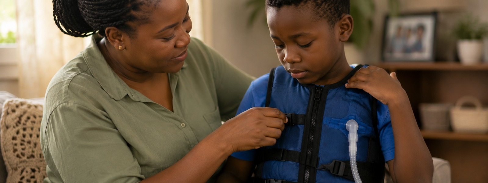

Living with CF
Daily management, not a diagnosis you get once.
A CF diagnosis reshapes daily life around a routine of airway clearance, nutrition, and medication, but with consistent care, people with CF can and do live full, active lives. This is general orientation, not a substitute for guidance from a CF care team.
The daily routine
Four pillars of everyday care
Airway clearance
Clearing the lungs
Chest physiotherapy techniques and devices loosen and clear thick mucus, usually done once or twice daily.
Nutrition
Eating for CF
Higher calorie needs and pancreatic enzyme replacement therapy (PERT) with meals help the body absorb nutrients properly.
Medication
Staying on routine
Inhaled and oral medications, including antibiotics, mucus thinners, and where available, CFTR modulators, are taken on a consistent schedule.
Exercise
Staying active
Regular physical activity supports lung function and is typically encouraged as part of routine care.
Beyond the medication
What a day of care actually looks like
CF treatment doesn't stop at pills. For most families, managing CF is a second, unpaid job, one that runs before school, after work, and every single day of the year.
Morning
The day starts before breakfast does. A 20–30 minute airway clearance session, chest physiotherapy or a vibrating vest, loosens the mucus that built up overnight, followed by nebulized medication breathed in through a mask. Enzyme capsules come out before the first bite of food, timed to the minute.
Throughout the day
Every meal, every snack, every school lunch comes with its own dose of enzymes: calculated, carried, and never forgotten. A cough gets monitored, not ignored, because a change in it can mean a change in treatment.
Evening
The airway clearance routine repeats, sometimes pushing the day's total close to an hour of physical therapy alone. Nebulizers and vest equipment get taken apart, washed, and sterilized every night, without exception, so they're ready for tomorrow.
Ongoing
Regular clinic visits track lung function and weight gain. A cold that most people shake off in a few days can mean a hospital stay. Sick or well, the routine doesn't pause: not for birthdays, not for exams, not for holidays.
For many families, this adds up to two hours or more of hands-on care every day, 365 days a year, with no day off. Your support doesn't just fund awareness. It funds the equipment, medication access, and family support that make these days a little lighter.
Mental health & family
The emotional weight is real too
Managing a chronic illness, or caring for a child who has one, carries a mental load that's easy to overlook next to the physical routine. Anxiety, burnout, and isolation are common among both people with CF and their caregivers, and are a legitimate part of care, not a side issue.
Why this matters here
In Ghana, families managing CF often do so without a local support network of others who understand the condition. Part of our work is simply making sure no family navigates this alone, connecting them to each other, not just to clinical care.
Looking ahead
Growing up and growing older with CF
As care has improved globally, more people with CF are living well into adulthood, which brings its own transitions. We're building resources for each of these stages as our community grows.
Pediatric to adult careMoving from a pediatric care team to an adult-focused one, usually in the late teens.
Education and careerPlanning coursework, workplaces, and disclosure around a lifelong condition.
Relationships and familyNavigating relationships, family planning, and genetic counseling as an adult with CF.
Common questions
What families usually ask
Will my child need this care forever?
Yes, CF is lifelong, but the daily routine often becomes second nature over time, and treatments continue to improve. Many people with CF build full lives around their care rather than around interruption.
Can a child with CF go to school normally?
In most cases, yes. Schools can usually accommodate enzyme timing, occasional treatment breaks, and any needed absences with the right communication between family, school, and care team.
Is CF care covered by health insurance in Ghana?
Coverage varies and is often limited, which is part of why standard CF care remains extraordinarily expensive here. This is one of the exact gaps this foundation is working to bridge.
What happens if a treatment is missed?
One missed session usually isn't an emergency, but the routine matters because consistency is what keeps symptoms manageable. If you're ever unsure, your CF care team is the right first call, not guesswork.
Where to go from here
Find what's next for you
Want to connect with others?
Meet the community of families, volunteers, and researchers behind this work.
Meet our community
Want to help make care lighter?
See the ways to give, volunteer, or partner with the foundation.
See how to helpHave a question about your family's care?
Reach out directly, we're happy to help however we can.
Get in touch